Betriebsmodi von Blockchiffren

Prof. Dr. Lukas Iffländer
HTW Dresden
07.08.2026
Agenda
- 01Betriebsmodi
- 02Electronic Codebook
- 03Cipher Block Chaining
- 04Cipher Feedback
- 05Output Feedback
- 06Counter Mode
Betriebsmodi blockbasierter symmetrischer Verfahren
Was tun, wenn Länge des Klartextes \(\ne\) Blocklänge des Verfahrens?
-> Betriebsmodi (“Modes of Operation”) blockbasierter symmetrischer Verschlüsselungsverfahren
- Electronic Codebook Mode (ECB)
- Cipher Block Chaining (CBC)
- Cipher Feedback Mode (CFB)
- Output Feedback Mode (OFB)
- Counter Mode (CTR)
- …
Electronic Codebook Modus (ECB)
Prinzip
- Klartext wird in Blöcke der Länge \(b\) (Blocklänge des Verschlüsselungsverfahrens; z. B. 128 Bit bei AES) unterteilt, letzter Block wird auf Länge \(b\) aufgefüllt (Padding)
- Verschlüsselungsfunktion \(E\) mit Schlüssel \(K\) wird blockweise auf die Klartextblöcke \(P_i\) angewandt; es entstehen (gleich große) Chiffratblöcke \(C_i\):
\[ C_i = E_K(P_i) \]
- Entschlüsselungsfunktion \(D\) mit Schlüssel \(K\) wird blockweise auf die Chiffratblöcke \(C_i\) angewandt; es entstehen (gleich große) Klartextblöcke \(P_i\):
\[ P_i = D_K(C_i) \]
-> Blöcke sind voneinander unabhängig
Electronic Codebook Modus (ECB)
Prinzip, grafisch
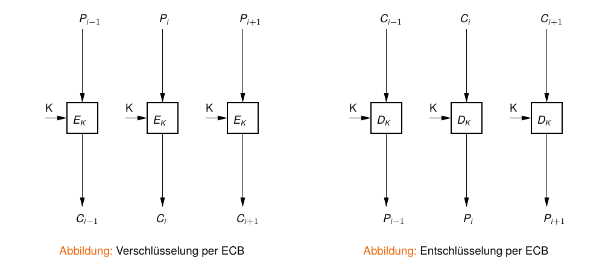
Angriff auf ECB mittels Block Replay
ECB-verschlüsselter Datenaustausch mit Bank
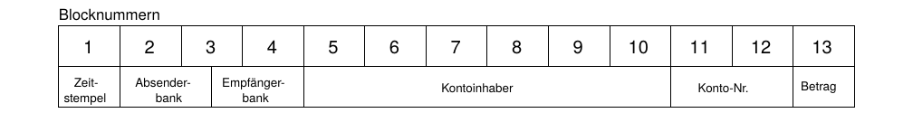
- Mallory zeichnet Datenverkehr zwischen Bank A und Bank B auf
- Mallory überweist zweimal einen festen Betrag von A nach B (bis auf Zeitstempel identische Nachrichten)
- bei allen abgehörten Nachrichten tauscht er die Felder 5-12 mit den Daten aus seinen Überweisungen aus
Grundproblem
ECB erlaubt das Austauschen einzelner Blöcke → Blöcke dürfen nicht unabhängig voneinander sein → CBC
Electronic Codebook Modus (ECB)
Eigenschaften
Vorteile
- 1:1-Abbildung Klartextblock -> Chiffratblock
- fehlertolerant: Bitfehler im Chiffrat verfälscht nur einen Klartextblock, keine Fehlerfortpflanzung
- Blockoperationen parallelisierbar
Nachteile
- gleicher Klartext erzeugt stets identisches Chiffrat
- unsicher: angreifbar durch Substitutionsattacken (Austauschen ganzer Blöcke, ohne diese zu entschlüsseln)
- des weiteren angreifbar mit statistischen Methoden bei Wissen über Klartext
- in der Praxis vermeiden: Muster im Klartext bleiben als Muster im Chiffrat sichtbar (Beispielbild)
Electronic Codebook Modus (ECB)
Verschlüsselung einer S/W-Bitmap (AES-128)
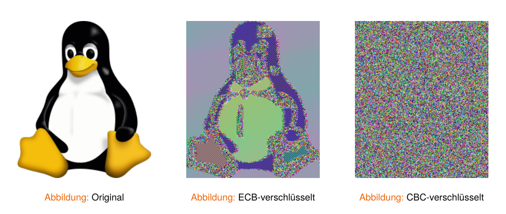
Cipher Block Chaining (CBC)
Prinzip
- Ergebnis früherer Verschlüsselungen fließt mit in Verschlüsselung des aktuellen Blockes ein (Rückkopplung)
- Klartextblock wird vor Verschlüsselung mit vorherigem Chiffratblock XOR-verknüpft:
\[ C_i = E_K(P_i \oplus C_{i-1}) \]
- Entschlüsselung umgekehrt; der Block wird nach Entschlüsselung mit dem vorangehenden Chiffratblock XOR-verknüpft:
\[ P_i = C_{i-1} \oplus D_K(C_i) \]
- erster Block benötigt einen zufälligen, nicht vorhersagbaren Initialisierungsvektor (IV), der nicht geheimgehalten werden muss (Random-IV; kein rein deterministischer Nonce)
- mit \(C_0 = IV\)
Cipher Block Chaining (CBC)
Prinzip
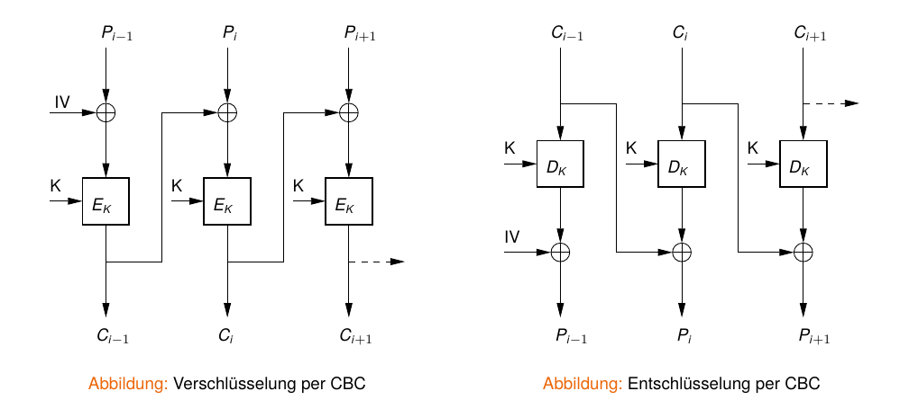
Cipher Block Chaining (CBC)
Fehlertoleranz
Bitfehler im Chiffrat
- enthaltender Block unbrauchbar
- nachfolgender Block hat einen 1-Bit-Fehler an der entsprechenden Position
- übernächster Block nicht betroffen
- Selbstsynchronisation auf Blockebene
Entfernen oder Einfügen eines Bits in das Chiffrat
- alle nachfolgenden Blöcke unbrauchbar
- Synchronisationsfehler nicht toleriert
- externe Rahmenstruktur mit Prüfsummen/CRC nötig
Cipher Feedback Modus (CFB)
Nachteil des CBC
- ganzer Klartextblock benötigt, bevor Verschlüsselung startet -> für byteweise Verarbeitung ungeeignet (z. B. ein sicheres Terminal)
Ziel
- Nutzung von blockbasierten Verfahren zur Implementierung einer Stromchiffre
Idee
- Der im vorangegangenen Schritt verschlüsselte Block wird nochmals verschlüsselt und in beliebiger Granularität per XOR mit dem Klartextblock verknüpft.
\[ C_i = P_i \oplus E_K(C_{i-1}) \]
\[ P_i = C_i \oplus E_K(C_{i-1}) \]
Cipher Feedback Modus (CFB)
Ablauf
- Initialisierung eines Schieberegisters mit Initialisierungsvektor
- blockweise Verschlüsselung des Schieberegisters
- XOR-Operation von \(n\) Bit des Chiffrats (\(k_i\)) mit \(n\) Bit des Klartexts (\(p_i\))
- Ausgabe/Übertragung der resultierenden \(n\) Bit (\(c_i\))
- gleichzeitige Rückkopplung von \(c_i\) in das Schieberegister und Verschiebung desselben um \(n\) Bit
- GOTO 2
Cipher Feedback Modus (CFB)
Verschlüsselung (Prinzip, graf.)
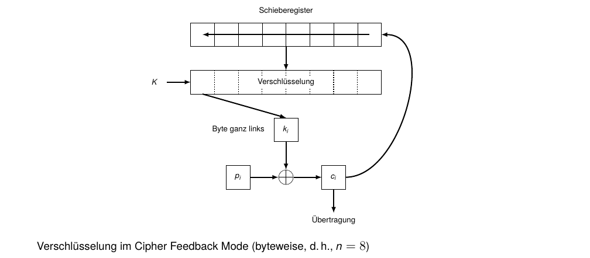
Cipher Feedback Modus (CFB)
Beispiel (Verschlüsselung: NOT)
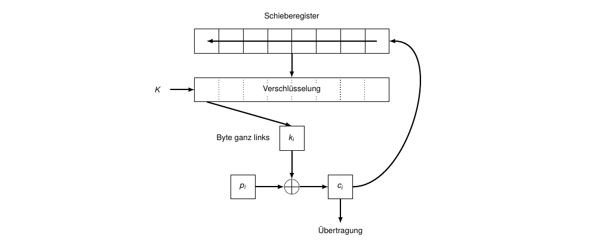
Cipher Feedback Modus (CFB)
Beispiel (Verschlüsselung: NOT)
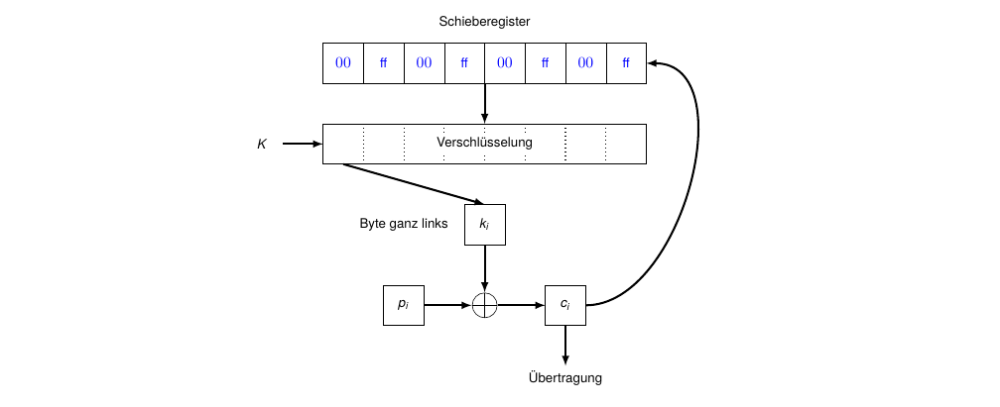
Cipher Feedback Modus (CFB)
Beispiel (Verschlüsselung: NOT)
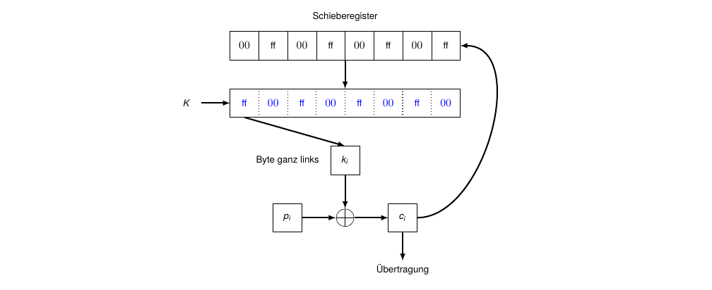
Cipher Feedback Modus (CFB)
Beispiel (Verschlüsselung: NOT)
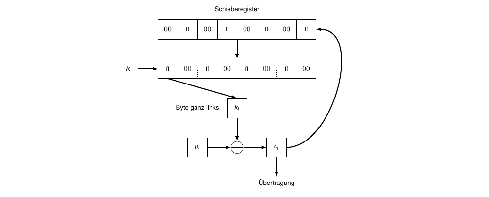
Cipher Feedback Modus (CFB)
Beispiel (Verschlüsselung: NOT)
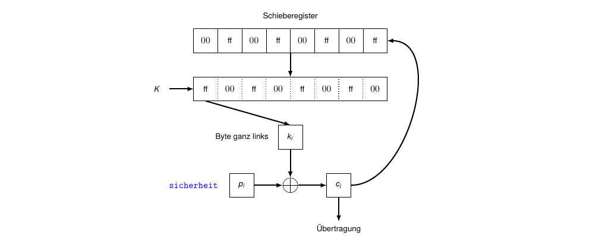
Cipher Feedback Modus (CFB)
Beispiel (Verschlüsselung: NOT)
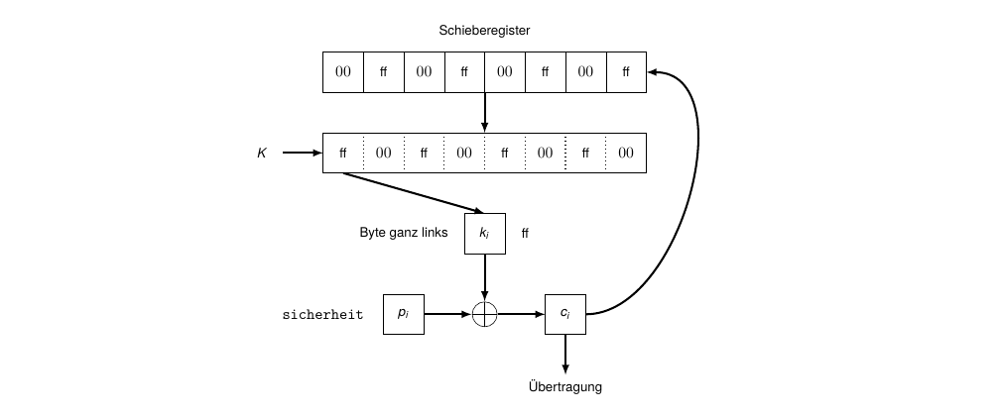
Cipher Feedback Modus (CFB)
Beispiel (Verschlüsselung: NOT)
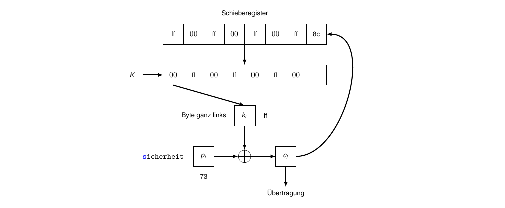
Cipher Feedback Modus (CFB)
Beispiel (Verschlüsselung: NOT)
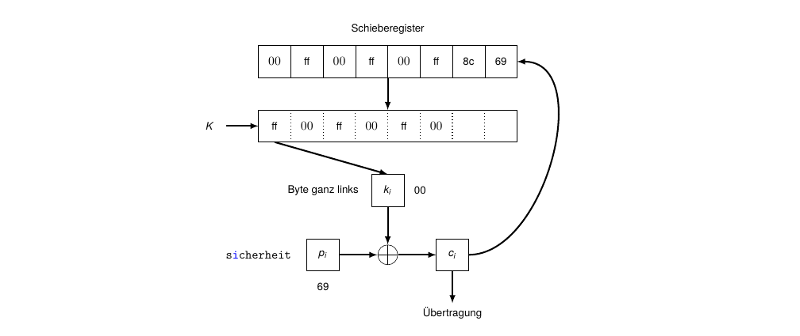
Cipher Feedback Modus (CFB)
Beispiel (Verschlüsselung: NOT)
Cipher Feedback Modus (CFB)
Beispiel (Verschlüsselung: NOT)
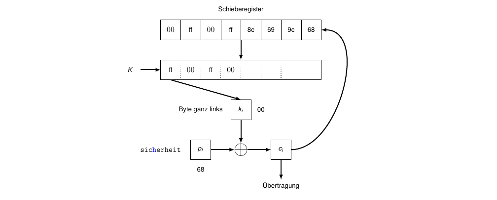
Cipher Feedback Modus (CFB)
Beispiel (Verschlüsselung: NOT)
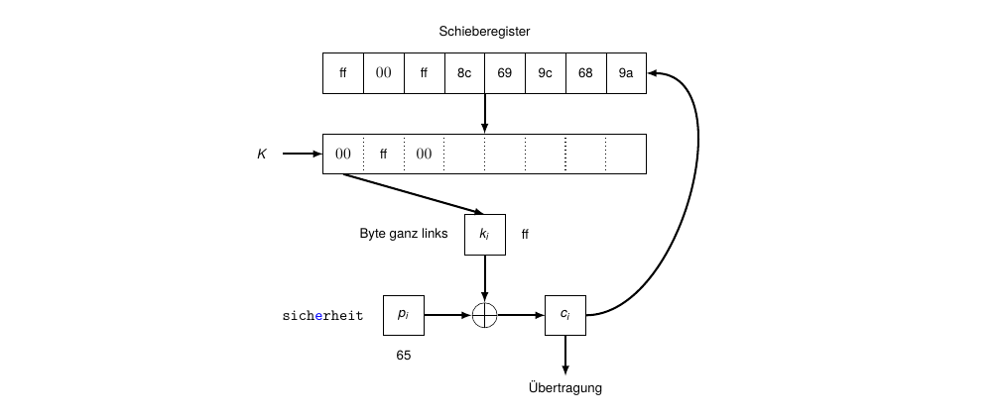
Cipher Feedback Modus (CFB)
Beispiel (Verschlüsselung: NOT)
Cipher Feedback Modus (CFB)
Beispiel (Verschlüsselung: NOT)
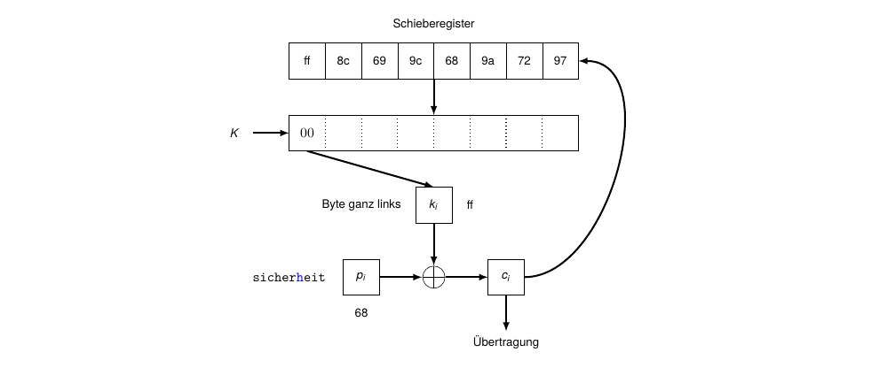
Cipher Feedback Modus (CFB)
Beispiel (Verschlüsselung: NOT)
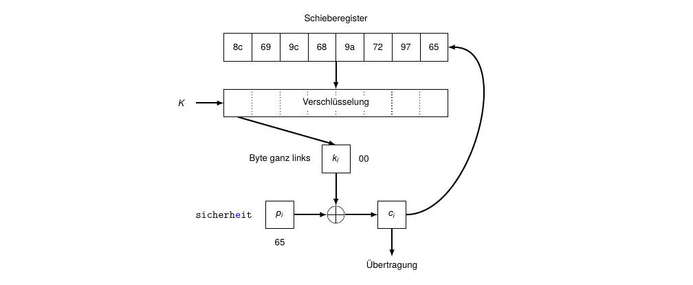
Cipher Feedback Modus (CFB)
Beispiel (Verschlüsselung: NOT)
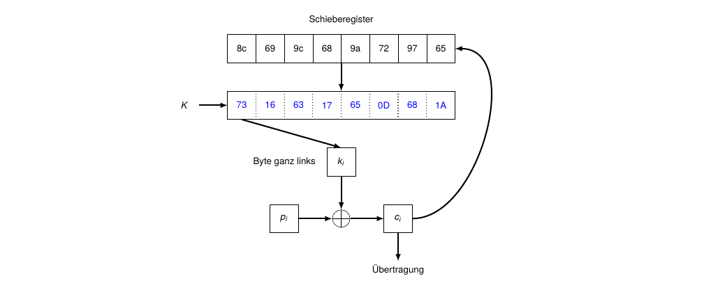
Cipher Feedback Modus (CFB)
Beispiel (Verschlüsselung: NOT)
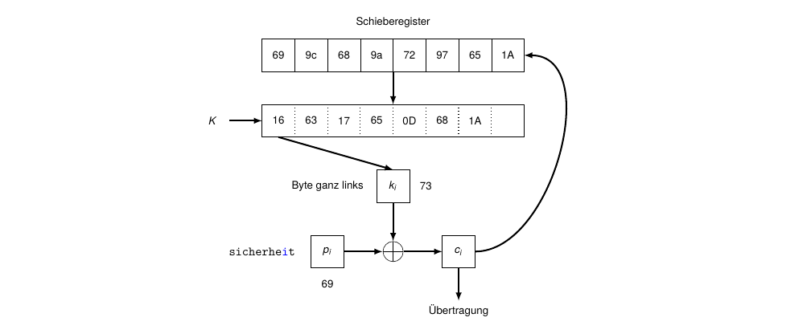
Cipher Feedback Modus (CFB)
Beispiel (Verschlüsselung: NOT)
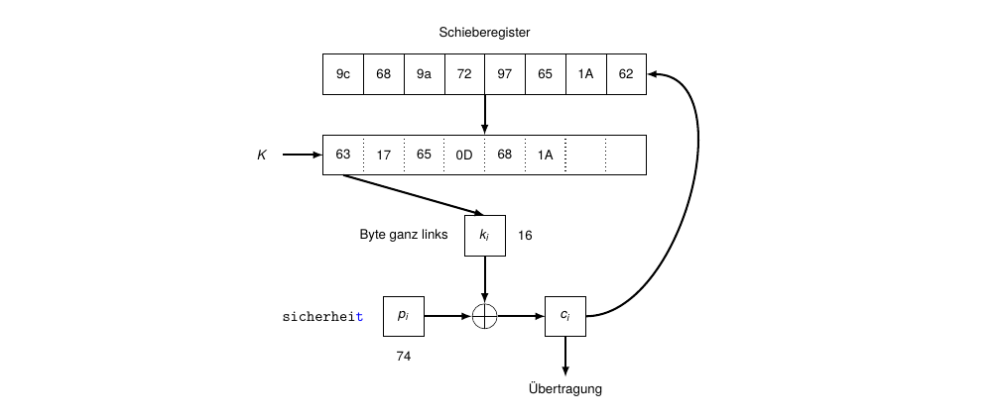
Cipher Feedback Modus (CFB)
- bei Entschlüsselung sind \(p_i\) und \(c_i\) vertauscht
- Initialisierungsvektor benötigt (mit \(C_0 = IV\))
- Granularität der Ausgabe (fast) beliebig: Byte, 16 Bit, 1 Bit usw.
- Fehler im Klartext bleibt unentdeckt (wird wieder in fehlerhaften Klartext entschlüsselt)
- Bitfehler im Chiffrat verfälscht das aktuelle Klartextsegment und führt für etwa \(\frac{b}{n}\) weitere Segmente zu Fehlern (bis der Fehler das Schieberegister verlassen hat); dabei ist \(b\) die Blockgröße und \(n\) die gewählte Segmentgröße
- fehlende Bits und eingeschobene Fehlerbits ebenso -> CFB stabilisiert sich auf Blockebene
- IV/Nonce darf mit demselben Schlüssel nie wiederverwendet werden (Nonce-Reuse bricht die Vertraulichkeit)
- bietet keine Authentizität/Integrität -> in der Praxis AEAD-Modi bevorzugen (z. B. GCM/CCM)
Output Feedback Modus (OFB)
Verschlüsselung (Prinzip)
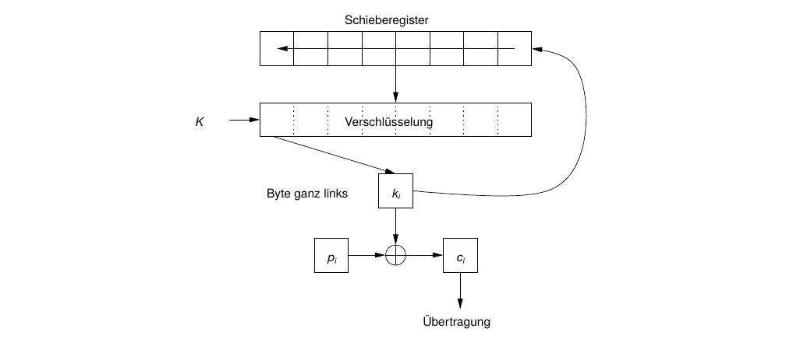
Output Feedback Modus (OFB)
Anmerkungen
- Rückkopplung des Resultatbytes \(k_i\) vor XOR-Verknüpfung mit Klartextbyte \(p_i\):
\[ C_i = P_i \oplus S_i,\qquad S_i = E_K(S_{i-1}) \]
\[ P_i = C_i \oplus S_i,\qquad S_i = E_K(S_{i-1}) \]
- sonst identisch zu CFB (d. h., IV benötigt; Geheimhaltung nicht erforderlich)
- “Hauptarbeit” (Erzeugung des Schlüsselstroms \(S_i\)) kann offline erfolgen
- 1-Bit-Fehler im Chiffrat führt zu 1-Bit-Fehler im Klartext
- Synchronisationsfehler katastrophal (vollständiger Informationsverlust)
- mit \(S_0 = IV\); IV/Nonce darf mit demselben Schlüssel nie wiederverwendet werden (Nonce-Reuse bricht die Vertraulichkeit)
- bietet keine Authentizität/Integrität -> AEAD-Modi bevorzugen (z. B. GCM/CCM)
Counter Mode (CTR)
Prinzip
- Initialisierungsvektor IV (pro Nachricht konstant, zwischen Nachrichten eindeutig) wird zusammen mit einem Zähler \(CTR_i\) mittels des Schlüssels \(K\) verschlüsselt; das Resultat wird mit dem Klartextblock \(P_i\) per XOR verknüpft:
\[ C_i = P_i \oplus E_K(IV || CTR_i) \]
- Der Klartextblock ergibt sich symmetrisch als
\[ P_i = C_i \oplus E_K(IV || CTR_i) \]
- Länge von IV und CTR zusammen entspricht der Blocklänge des Verfahrens; “\(||\)” bezeichnet Konkatenation
Counter Mode (CTR)
Eigenschaften
- benötigt IV und Counter; beide sind nicht geheim, müssen zusammen eine Nonce sein (eindeutig pro Schlüssel). Nicht wiederverwenden!
- nutzt Blockchiffre, betrieben als Stromchiffre
- Bitfehler invertiert genau das betreffende Bit im Klartext (bitweise)
- Blöcke sind unabhängig; gleiche Klartextblöcke ergeben aber unterschiedliche Chiffratblöcke, da sie von CTR abhängen
- parallelisierbar; wahlfreier Zugriff auf jeden Block
- Ver- und Entschlüsselung mit identischer Funktion (=> Nutzung einer Einwegfunktion möglich)
- keine Authentizität/Integrität -> AEAD-Modi bevorzugen (z. B. GCM)
Counter Mode (CTR)
Prinzip
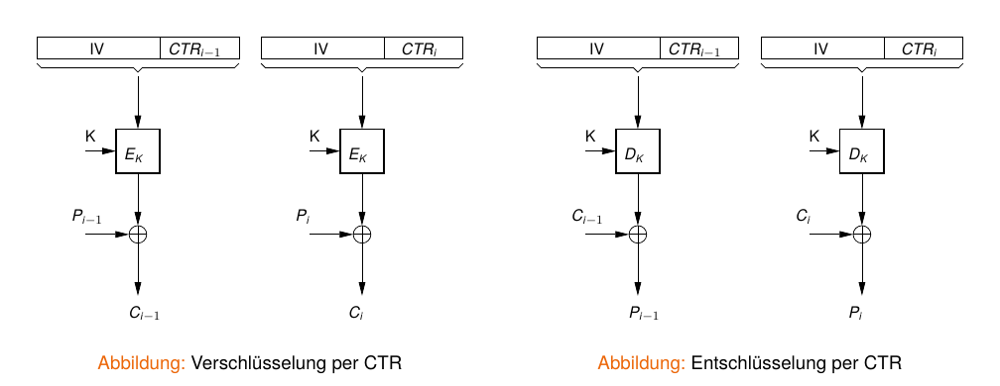
Weitere Betriebsmodi
- Galois Counter Mode (GCM) - ermittelt zusätzlich einen MAC zur Authentisierung
- Counter with CBC-MAC (CCM)
- Offset Codebook Mode (OCB)
- Integrity Aware Parallelizable Mode (IAPM)
- …
Vielen Dank!
Prof. Dr. Lukas Iffländer
HTW Dresden
07.08.2026

07.08.2026 / Betriebsmodi von Blockchiffren / HTW Dresden / Prof. Dr. Lukas Iffländer